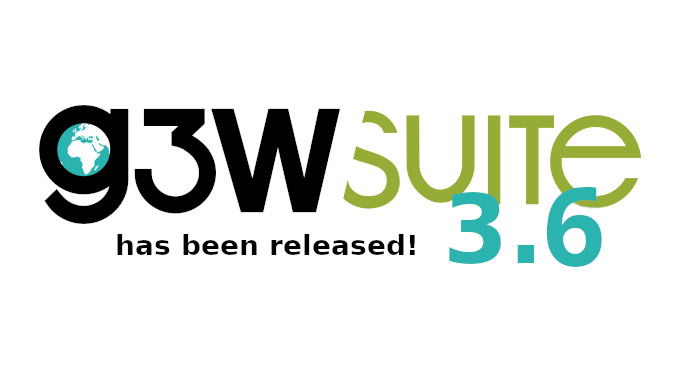
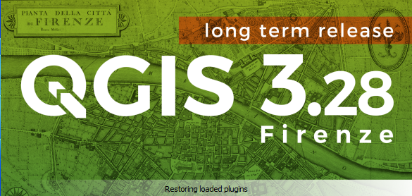
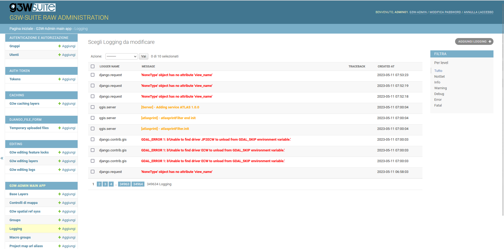

Changelog G3W-Suite 3.6
Release date: 17 May 2023
Changelog for G3W-SUITE 3.6
Version 3.6 of G3W-SUITE is characterized by greater stability and a greater number of functions and features inherited from the QGIS project.
We remember in particular:
- QGIS 3.28 LTR compatibility
- Django Log and System Log
- Multilayer search
- Zoom previous/next
- Display number of layer elements
- Switching between maps of diversified Cartographic Groups
- Layer transparency
- Project and group trash management
- Spatial Bookmarks
- QueryByDraw
- Multi-layer time series
We hope you enjoy this great work!
Happy mapping!

Sponsor and funder
G3W-SUITE is an open source project and if you are able to, consider supporting our work through donations or contributions to the code documentation, web site and so on. Among the main funder of this version we remember:
General
Feature: QGIS 3.28 LTR compatibility
G3W-SUITE 3.6 is compatible with the new 3.28 LTR of QGIS
Take advantage of all the news related to the preparation of QGIS projects with the new LTR version

Feature:�Project and group trash management
With the new version, the deletion of cartographic projects and/or groups can be restored thanks to the “Trash” function.
Restoring a project involves restoring all accessory settings/functions (permissions, searches, editing settings, downloads, etc…).
Feature: Messages and map info
The tool allows you to define personalized (timed) messages visible when the WebGis service starts.
In the message you can define
- title
- message body (also in html)
- message type (info, warning, error, critical)
- validity period (optional)
Feature: Multilayer Search
It is possible to create searches based on two or more layers with homonymous fields.
The result will show the features of all layers that satisfy the search criteria.
Feature: System log management
With v3.6.x version G3W-SUITE can save message logs inside the database.
In the specific Django administration section, the logs deriving from:
- Django
- QGIS Server
- PostGreSQL/PostGis

Cartographic Client
Feature: Switching between maps of different Cartographic MacroGroups and Groups
It is now possible to switch between different maps even if they belong to different Cartographic Groups and/or MacroGroups.
Maintaining as always extension and visualization scale.
Feature:�QueryByDraw
A new query tool adds to the previous ones.
Now you can draw your polygon on the map and get as a result all the elements that intersect or are contained in it.
Feature:�Layer transparency
A slide tool allows users to customize the level of transparency of individual layers
Feature: Zoom last/next
A new optional map tool is added to locate to previous/next map extents
Feature: Show features count
Function inherited from QGIS project
If the ‘Show features count’ function is activated in the QGIS project at vector layer level, the same information will be displayed on the web map.
The number of features updates automatically based on the style associated with the layer.
Feature: Spatial bookmarks
Function inherited from QGIS project
In case Spatial Bookmarks are saved at the QGIS project level, they will also be available on the web map.
The user will be able to create his own personalized spatial bookmarks which will be kept until the bookmark itself or the browser cache is deleted
Editing
Feature: Default values
Function inherited from QGIS project
Fields associated with default values also based on QGIS geometric expressions are updated in real time during editing
Analysis tool
Feature: Time series multilayer
Function inherited from QGIS project
Continues time series feature implementations.
It is now possible to create animations based on multiple temporal layers both raster and vector.
Per il dettaglio completo consulta il manuale ufficiale su ReadTheDocs.